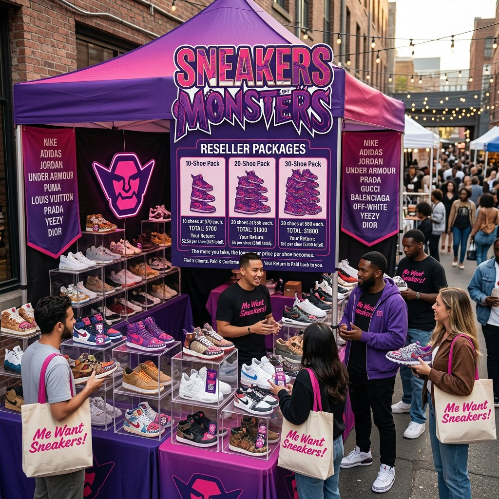

Énergie monster
Audacieux, mémorable et construit autour de la chasse.
À propos
Ils les chassent, les collectionnent, les revendent et bâtissent une culture autour.

Sneakers Monsters™Manifeste
Sneakers Monsters™ transforme le désir de sneakers en système plus clair: demander les marques que les gens veulent, apprendre ce qui fait bouger le marché, et bâtir une culture autour de l’achat, la collection et la revente avec plus de discipline.
L’identité monster rend la marque fun. La structure la rend utile. Le site est construit pour capturer des demandes, éduquer les débutants et créer une entrée mémorable dans un univers sneaker.
L’univers
Ce n’est pas supposé être une page sneaker générique. C’est un monde de marque avec une voix, des visuels et un parcours client.
Audacieux, mémorable et construit autour de la chasse.
Un marché rapide où timing, taille, source et communication comptent.
Du contenu qui aide à comprendre avant d’agir sur le hype.
 Guide Collectionneur
Guide Collectionneur
Guide de terrain gratuit
L’histoire commence avec le guide. Entre dans la jungle avec une carte.
La jungle des sneakers bouge vite. Certaines paires disparaissent rapidement. Certains prix changent du jour au lendemain. Ce guide gratuit Sneakers Monsters™ t’explique comment fonctionne la revente, ce qui crée la demande, les erreurs à éviter et comment penser comme un vrai chasseur de sneakers.
Ce que la marque défend
Sneakers Monsters™ peut servir acheteurs, collectionneurs et revendeurs sans prétendre que le marché est sans risque.
Faciliter les demandes d’options et de prix.
Enseigner les bases dans une voix qu’on veut lire.
Pas de promesses faciles. De meilleures informations, attentes et décisions.